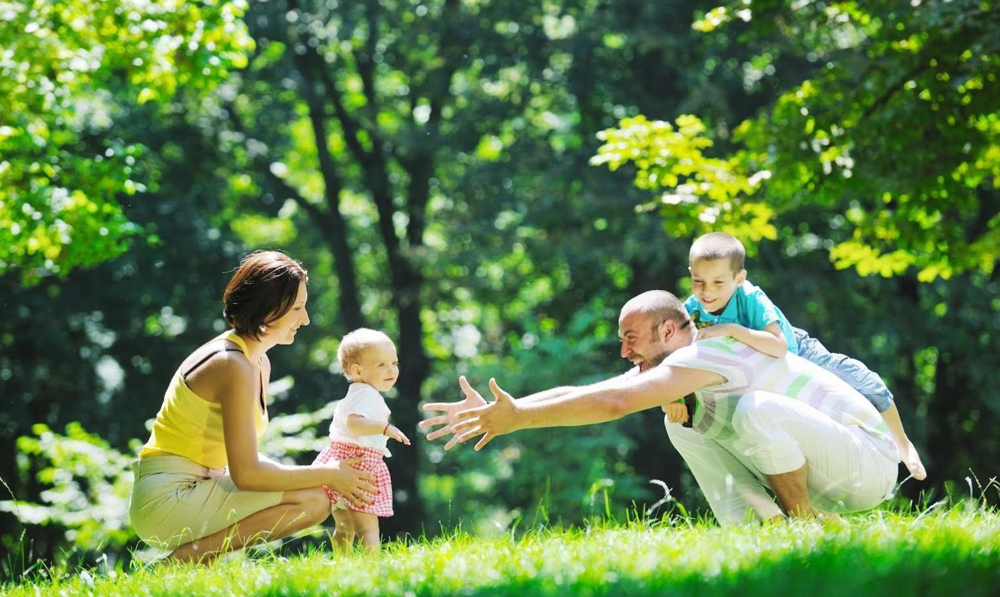

О комплексе
Компания Element-Beton создаёт новую жилую среду, соответствующую европейскому качеству жизни. Комфорт, безопасность, экология, эстетика, продуманность жизненного пространства, это основные критерии, которых придерживается компания при строительстве жилых комплексов.
Element-Beton представляет проект «Новый дом в Луге»

Жилой комплекс находится в экологически чистом месте на берегу реки Луга.
Город Луга сочетает в себе самые главные ценности: благоприятный мягкий климат, чистейший воздух, обилие лесов, живописных водоемов, разнообразие ландшафтов. Лужский район самый южный в Ленинградской области, за это его прозвали «Северным Крымом».
Именно поэтому многие жители Ленинградской области и сами петербуржцы с удовольствием отдыхают в Лужском крае.
«Новый дом в Луге» - это прекрасное место для жизни и для комфортного отдыха.
Инфраструктура комплекса
Важная составляющая комфортной жизни - это развитая инфраструктура.
В шаговой доступности от Дома расположен Парк Культуры и Отдыха «Заречный». Рядом магазины: «Пятёрочка», «7Я Семья».
В Рядом с Новым домом в Луге есть всё необходимое. Магазин, две школы: начальная и средняя с современным спортивным стадионом. Внутри комплекса детские и спортивные площадки, зоны для отдыха и прогулок. Вся территория комплекса находится под охраной: вы спокойны за своих близких.
Живите там, где другие отдыхают!
Жилой комплекс находится в экологически чистом месте на берегу реки Луга.
Город Луга сочетает в себе самые главные ценности: благоприятный мягкий климат, чистейший воздух, обилие лесов, живописных водоемов, разнообразие ландшафтов. Лужский район самый южный в Ленинградской области, за это его прозвали «Северным Крымом».
Именно поэтому многие жители Ленинградской области и сами петербуржцы с удовольствием отдыхают в Лужском крае.
«Новый дом в Луге» - это прекрасное место для жизни и для комфортного отдыха.